Units 500 & 600 — Air Compressor & Nitrogenplus Unit 540 — Raw Water Treatment
Tendrara Micro LNG Facilities — operator training program. The three utility units that keep the rest of the plant operable: compressed instrument air, nitrogen for inerting and make-up, and treated raw water for the amine circuit. Small in iron, and reached by lines that run to nearly every other P&ID on site.
About this training program
A technical program for LNG plant personnel, built around the Tendrara Micro LNG facility — from gas fundamentals to unit-by-unit operation and the control room.
- 2 Fundamentals modules + 16 Operation modules (unit-by-unit & control room).
- Each module: objectives → content → Q&A → exam & evaluation. Safety-first, technician-focused.
Meet the team
Program roadmap
| Fundamentals | ||
|---|---|---|
| 001 | Intro to LNG, properties, hazards & safety | 08 Jul |
| 002 | Tendrara facility operation, access & work flow | 23 Jul |
| Operation — unit by unit | ||
| 101 | U200 Inlet & U530 Process Water | 28 Jul |
| 102 | U330 / U310 Sweetening & Dehydration | 30 Jul |
| 103 | U340 Refrigeration | 04 Aug |
| 104 | U350 Liquefaction — Part I | 06 Aug |
| 105 | U350 Liquefaction — Part II | 11 Aug |
| 106 | U360 Flash & BOG + U370 NGL Vaporizer | 13 Aug |
| Operation (cont.) — forecast dates | ||
|---|---|---|
| 107 ◂ | U500 / U600 Air & N₂ + U540 Raw Water | 25 Aug |
| 108 | U220 LNG Storage & Dispensing | 27 Aug |
| 109 | U410 Hot Oil | 03 Sep |
| 110 | U480 & U490 Power Generation | 08 Sep |
| 111 | U230 / 700 / 550 / 730 Flare, F&G, Drain, Fire | 10 Sep |
| 112 | Control Room / Console — Part I | 15 Sep |
| 113 | Control Room / Console — Part II | 17 Sep |
| 114 | U430 Analyzers | 22 Sep |
| 115 | Plant operation, start-stop & common upsets | 24 Sep |
| 116 | LNG plant start-stop & LNG truck loading | not active |
What Module 107 covers
One package, one module: the instrument air & nitrogen generation package of Units 500 & 600 — the utility every pneumatic valve and every blanket in this plant depends on.
- The package first: scope of supply, the general arrangement, the field photos and the vendor's drawing.
- Then how it works, block by block: compressors — with the video and the live simulator — filtration, both dryers, and the N2 generator with its purity mechanism.
- The cold-start procedure: the valve lineup and the three-stage equipment sequence, exactly as the operators will run it.
- Finish on maintenance: the service parts, the vendor's interval tables, oil, and the dusty-environment extras for this site.
- Fifteen minutes of questions, then a thirty-minute exam.
| Module openslides 1–5 · program, team, roadmap, this slide | 12 min | 0:12 |
| The packageslides 6–10 · scope, GA, photos, drawing | 8 min | 0:20 |
| Operationslides 11–19 · video · simulator · dryers · N2 | 25 min | 0:45 |
| Start-upslides 20–23 · valve lineup + 3-stage sequence | 12 min | 0:57 |
| Maintenanceslides 24–28 · intervals, oil, part numbers | 12 min | 1:09 |
| Q&Aslide 29 | 15 min | 1:24 |
| Exam + evaluationslide 30 | 30 min | 1:54 |
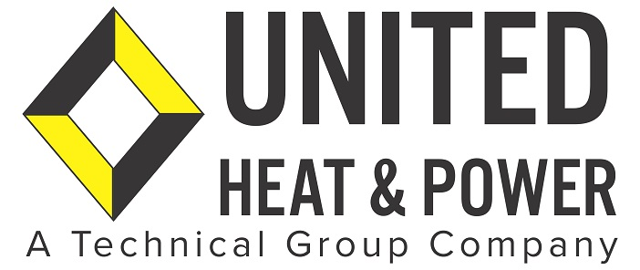
Instrument Air & N2 Generator — Operation & Maintenance
TAM 158 · Tendrara Project · Morocco
Vendor package presentation · United Heat & Power — A Technical Group Company
Operation overview — equipment
The Instrument Air & N2 package consists of the following components:
- 3 × 55 kW air-cooled rotary screw compressors — PK-501A / B / C
- 1 × 10 m³ wet air receiver — V-501
- 1 × refrigerated dryer with duplex 2-stage inlet filters & duplex activated-carbon filters on the discharge — PK-502
- 1 × 2 m³ dry air receiver — V-503
- 1 × instrument air desiccant dryer, modular type — V-502A/B
- 1 × N2 generator package — V-601A/B
- 1 × 1 m³ N2 buffer tank — no tag number assigned
- 2 × 10 m³ N2 receivers — V-602
Package overview
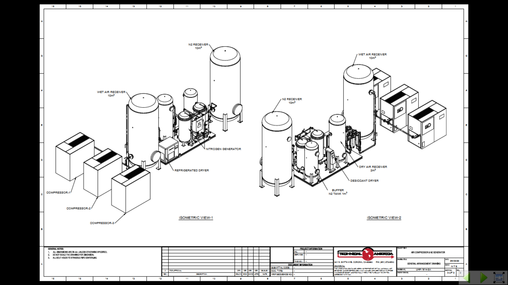
The package in the field
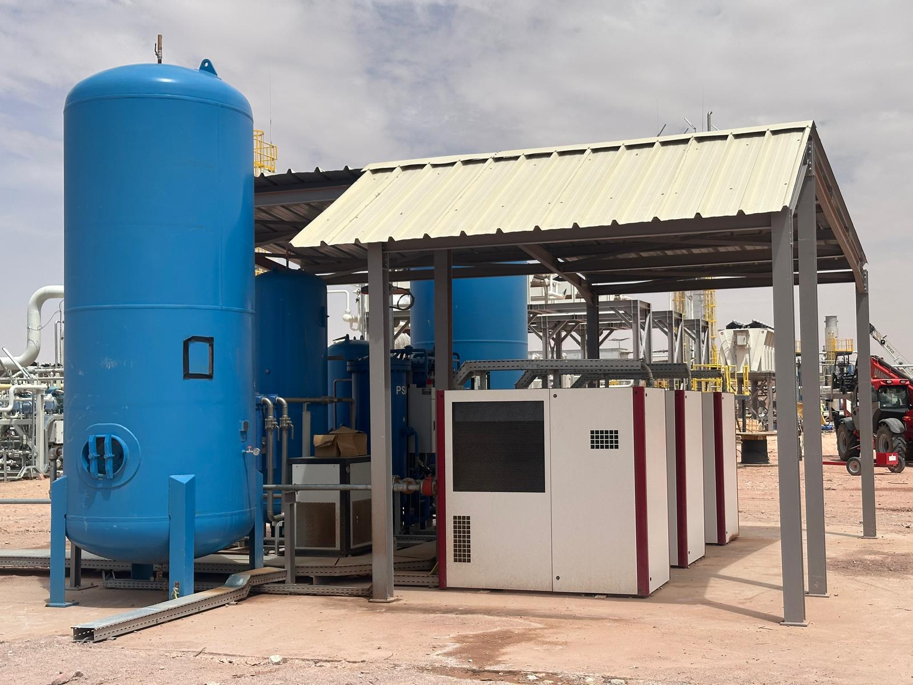
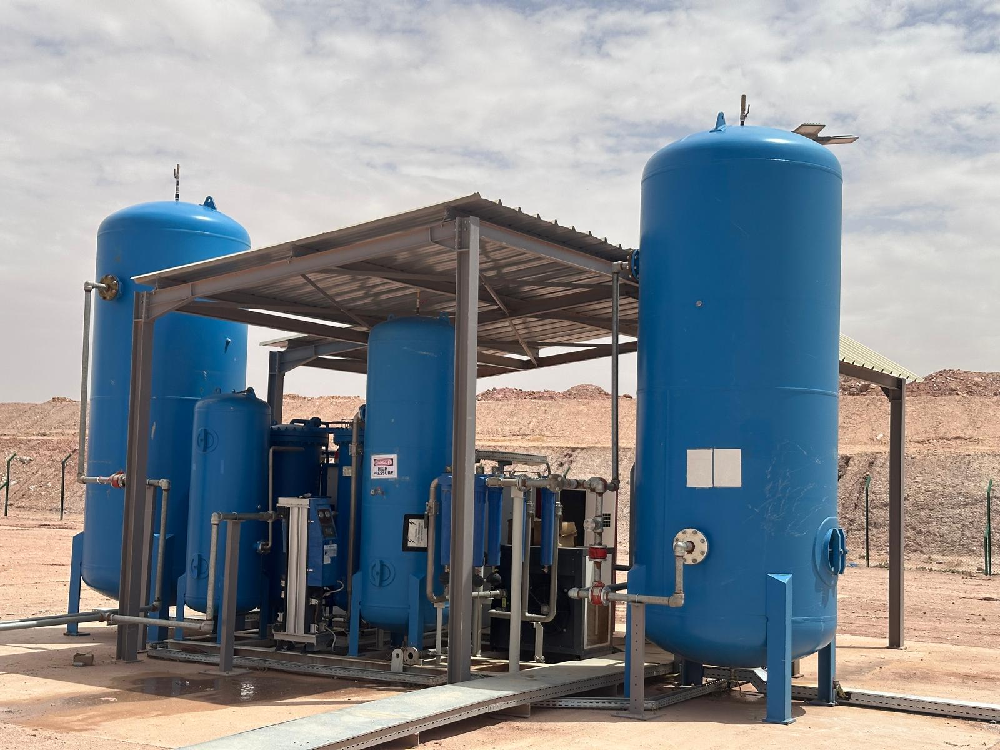
Package overview — drawing
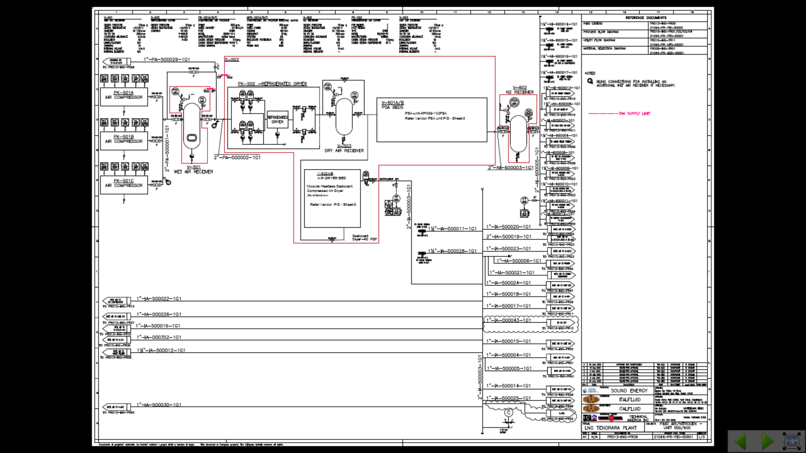
Description of operation — flow diagram
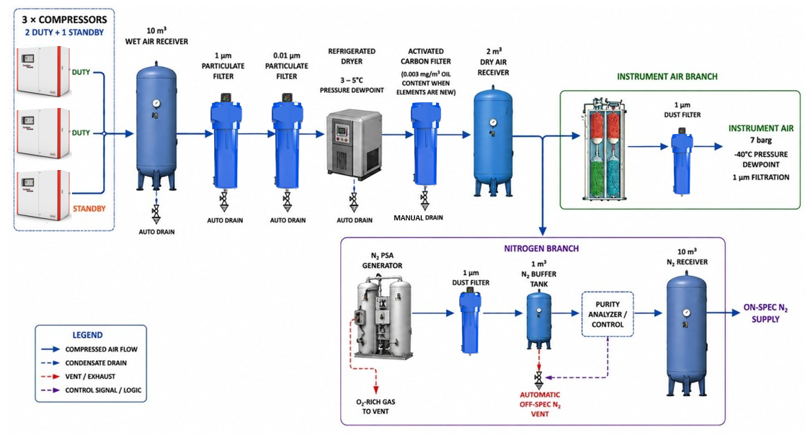
How the compressor works — video
How the compressor works — simulator
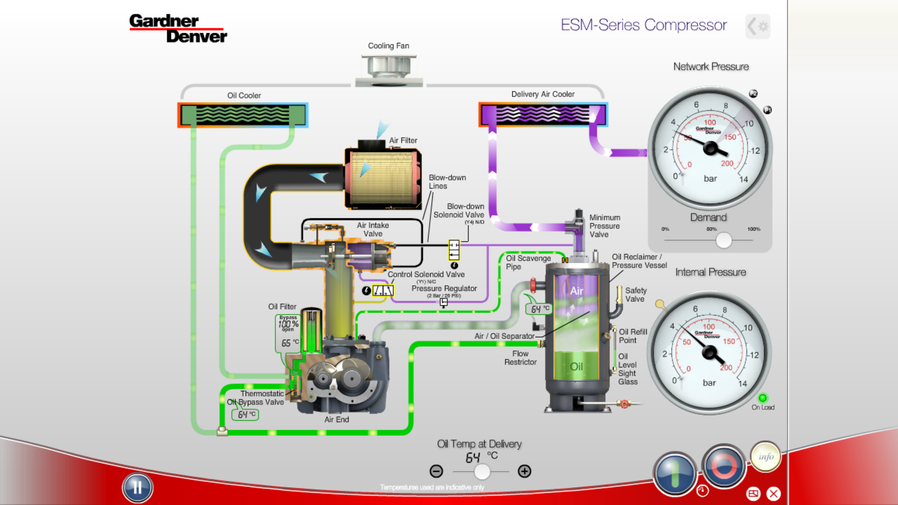
How the filtration works
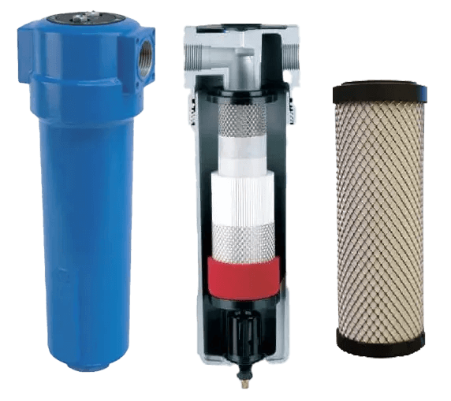
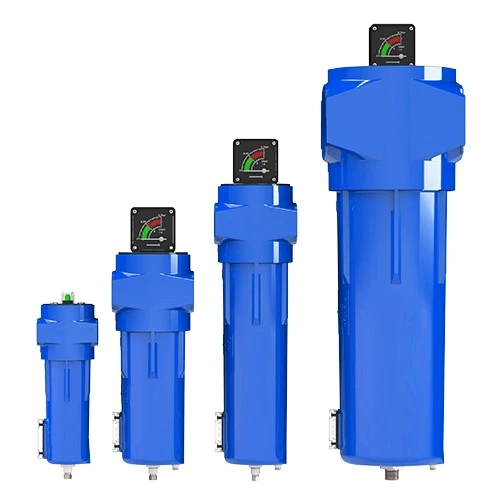
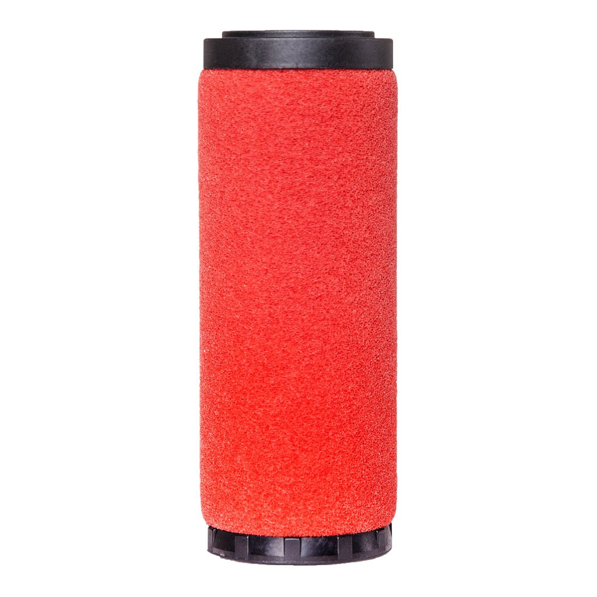
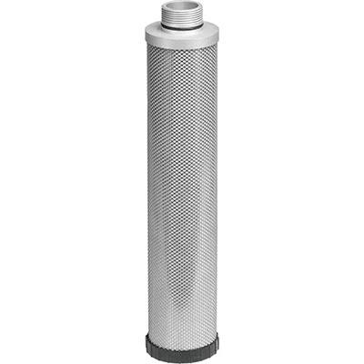
- Particulate filters have differential-pressure indicators, auto drains & multistage elements — 2 grades in series to extend element life.
- Activated-carbon filters have no ΔP indicator and no drain — the element absorbs oil from the compressed air.
- Air path through the housing: air inlet → filter media (multistage) → liquids — water & compressor oil — coalesce on the element and drip to the bottom → auto drain (particulate only).
- Carbon filters are installed after the refrigerated dryer: lower air temperature = longer element life.
How the refrigerated dryer works
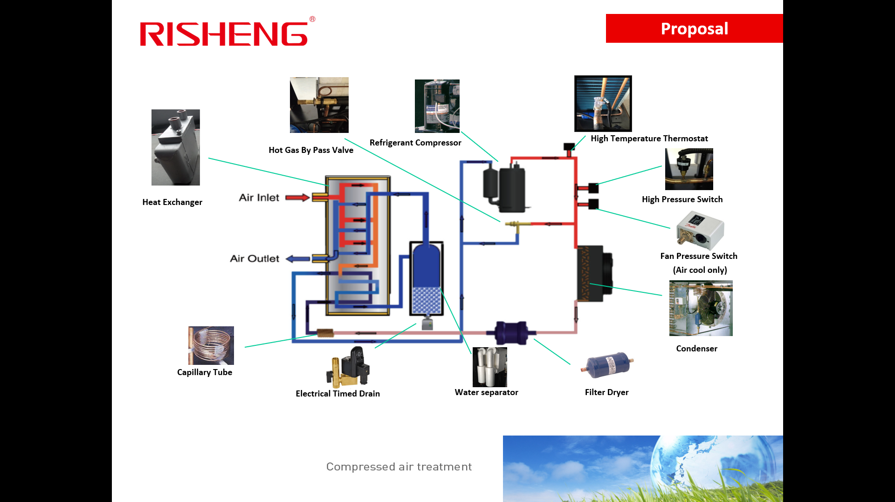
- Compressed air is cooled to +3 to +5 °C; the moisture condenses, making the air «dry» at normal ambient temperature.
- The pressure dew point becomes +5 °C — no moisture will condense unless the air drops below 5 °C.
- An air-to-air heat exchanger pre-cools the incoming air for efficiency & re-heats the discharge, so condensation does not form on cold pipes.
- The refrigeration circuit is similar to a domestic refrigerator.
How the instrument air dryer works
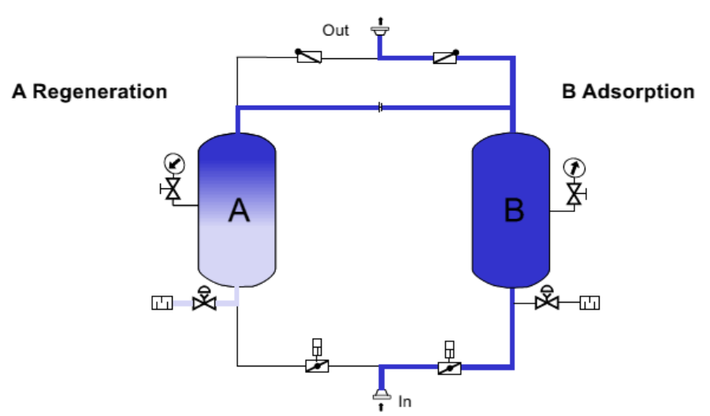
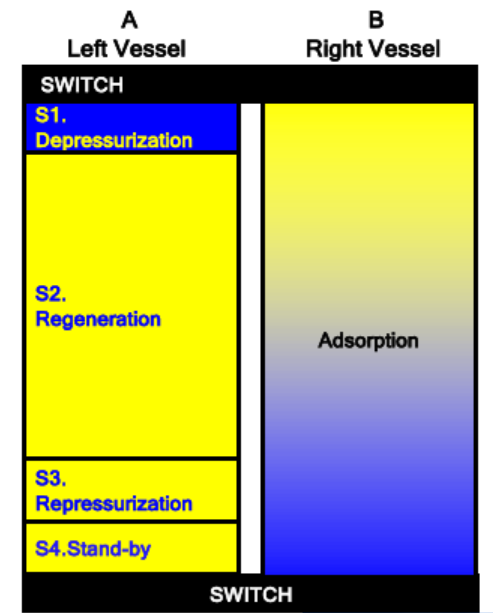
- The instrument air dryer is a pressure-swing adsorption dryer.
- Wet compressed air enters the bottom of the «online» tower and flows up through a bed of desiccant (activated alumina); the desiccant adsorbs the water vapour, drying the air to −40 °C pressure dew point in this installation.
- A small portion of dry outlet air — ~20% of flow — is diverted down through the offline tower. Depressurized, the media desorbs its moisture; the purge air carries it away and vents to atmosphere through a muffler.
How the N2 generator works
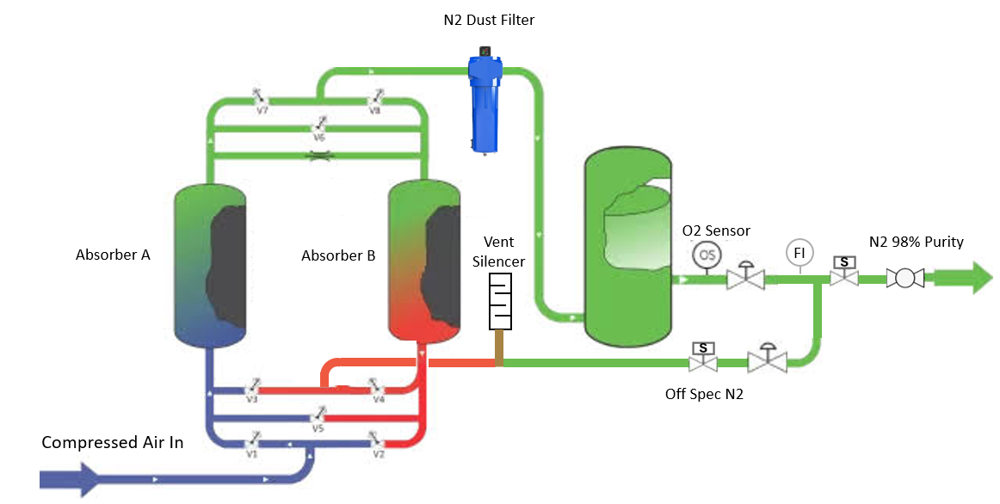
- The N2 generator also works on the PSA principle.
- Clean dry compressed air enters the bottom of the absorbing tower and flows up through a bed of CMS — Carbon Molecular Sieve — which absorbs oxygen: the O₂ molecule passes into the sieve openings, the N₂ molecule is too large, so it cannot pass in. After a short time the CMS is saturated and must be regenerated.
- During regeneration the column is depressurized, forcing the absorbed gas out of the CMS; a small portion of product nitrogen flushes the oxygen-rich waste gas to atmosphere through a silencer.
How the N2 generator works — continued
- The N2 passes through a dust filter then into the N2 buffer tank.
- On start-up the buffer holds atmospheric air (78% N2); high-purity PSA nitrogen mixes in, gradually raising purity while low-purity gas continuously vents. At the correct purity the automatic valves switch over and deliver N2 to the system.
- Consuming more N2 than rated drops the purity — delivery stops automatically, the buffer vents until purity recovers, then delivery resumes.
- After a stop, the generator takes time to deliver on-spec N2 again.
Description of operation — the full path
- Compressors: 2 × duty + 1 × standby → 10 m³ wet air receiver (V-501).
- Filtration: 1 µm then 0.01 µm particulate filters → refrigerated dryer — pressure dew point 3–5 °C → activated-carbon filter — residual oil 0.003 mg/m³ with new elements → 2 m³ dry air receiver (V-503).
- Take-off 1 — instrument air: desiccant dryer + dust filter → instrument air at 7 barg, −40 °C pressure dew point, 1 µm filtration.
- Take-off 2 — nitrogen: N2 generator PSA (O₂-rich gas to vent) → 1 µm dust filter → 1 m³ buffer tank — auto-vents until the required purity is reached → on-spec N2 to the 10 m³ N2 receiver.
Starting sequence — valves
- Check all equipment is powered up.
- Compressor isolation valves open — 500-HV-001 / 002 / 003.
- Wet air receiver by-pass closed — 500-HV-005.
- Wet air receiver inlet open — 500-HV-006.
- Wet air receiver outlet closed — 500-HV-004.
- Refrigerated dryer inlet filters: one set open, the other closed — (500-HV-015 & 016) or (500-HV-019 & 020).
- Refrigerated dryer outlet filters: one set open, the other closed — (500-HV-017 & 018) or (500-HV-021 & 022).
- Dry air receiver by-pass closed — 500-HV-033.
- Dry air receiver inlet open — 500-HV-023.
- Dry air receiver outlet open — 500-HV-024.
- Instrument air dryer inlet closed — 500-HV-025.
- Instrument air dryer outlet closed — 500-HV-028.
- N2 package isolation valve (part of the package) closed — V201/G11/2.
- Other N2 package manual valves open — V205/G1, V213/G1, V214/G1, V215/G1.
- N2 receiver isolation valves closed — 600-HV-010 & 600-HV-011.
Starting sequence — dryer first, then compressors
- Turn on the refrigerated dryer («On» button). It must run at least 5 minutes before any compressed air passes through, so it reaches operating temperature.
- Start 2 of the 3 compressors with the green I button (the E-stop may need twisting to reset). To stop, use the red O button — not the E-stop. The machines load, pressurize the wet receiver, unload, and may drop to standby — they restart automatically when receiver pressure falls.
- With the wet receiver fully pressurized and the dryer past its 5 minutes, slowly open 500-HV-004 to introduce air into the filters, the refrigerated dryer and the dry air receiver (V-503).
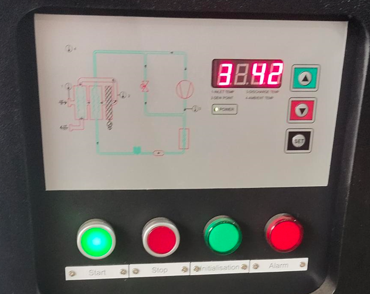
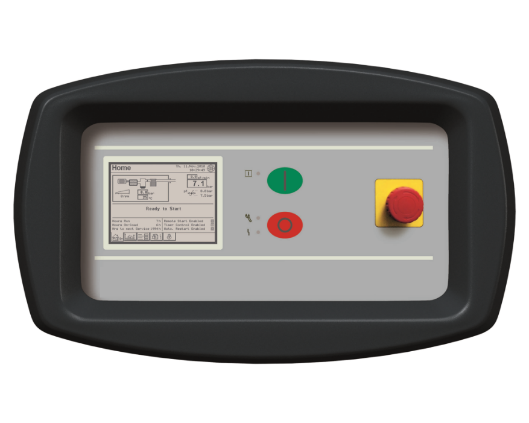
Starting sequence — instrument air dryer
- Once full working pressure is reached in the dry air receiver (V-503), fully open 500-HV-004 and leave it open.
- Power on the instrument air dryer.
- Slowly open the inlet valve 500-HV-025 to pressurize the dryer — confirm full working pressure on the front gauge panel.
- Turn the dryer on with the green On button below the HMI display.
- Let it run 3 full cycles (≈10 minutes), then partially open the outlet 500-HV-028 so the downstream system pressurizes without overloading the dryer — fully open once the system is pressurized.
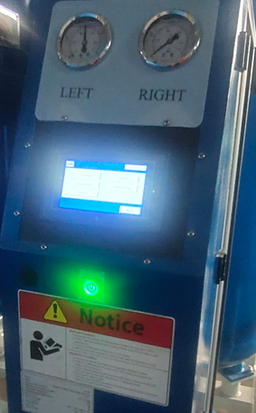
Starting sequence — N2 package
- Slowly open the N2 package isolation valve V201/G11/2 to begin pressurizing the system.
- Turn on the O₂ analyzer on the N2 package control panel — the top panel in the photo.
- While pressure is building, turn the package on with the green start button on the control panel.
- Switch the O₂ analyzer on at its on/off switch.
- The generator may need multiple cycles to reach the required purity in the buffer tank — site ambient conditions and idle time both stretch it.
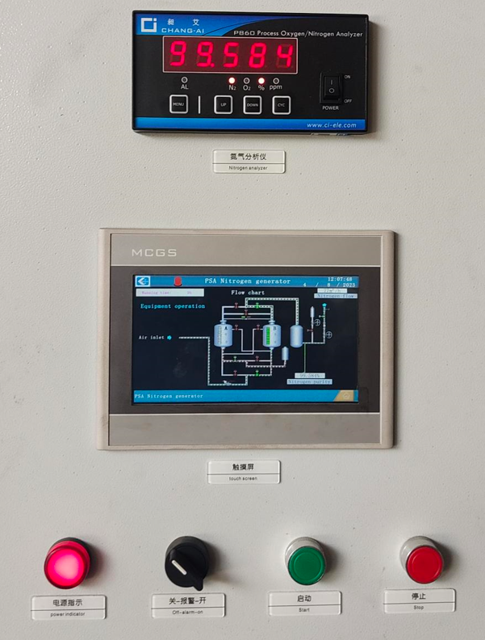
Maintenance — compressor
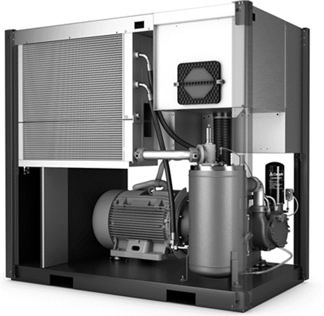
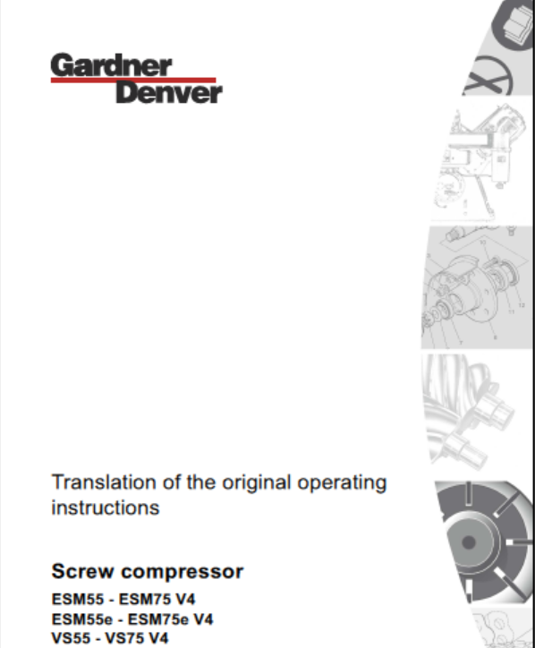
Maintenance — compressor schedule
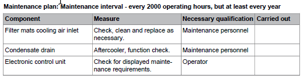
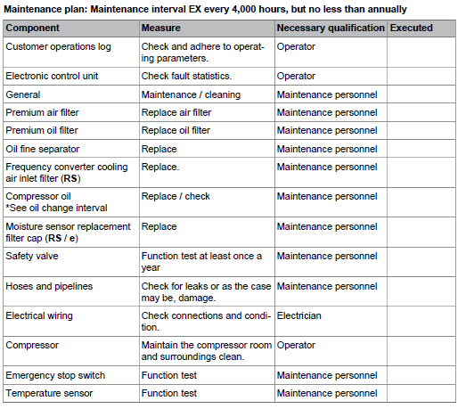
Oil intervals — and the dusty-environment extras
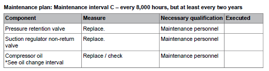
| Oil change intervals | 4 000 h | 8 000 h | 16 000 h |
|---|---|---|---|
| Mineral | ✗ | ||
| Synthetic | ✗ | ||
| Food grade | ✗ |
Additional maintenance for a dusty environment:
- Cooler & the inside of each compressor cleaned every 2 weeks.
- Cabinet filters replaced as needed.
- Air inlet filter may require more frequent replacement.
- These extra parts must be kept in stock.
Maintenance — refrigerated dryer & filters
- Every 1 000 operating hours: replace the activated-carbon filters, 2 × 100% (RSG-ACS-0330G/V3)*; check the auto-drain operation; clean the condenser radiator.
- Every 2 000 operating hours: replace the particulate & coalescing filters, 2 × 100% of each (RSG-AO-0330G/V2 + RSG-AA-0330G/V2); clean the filter auto drains.
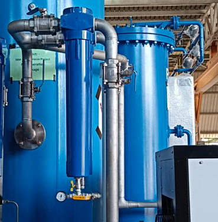
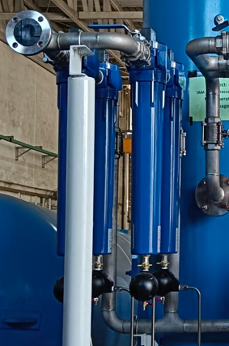
Maintenance — desiccant dryer & N2 generator
- V-502 A/B desiccant dryer — every 2 000 operating hours: replace the dust filter, 1 × 100% (RSG-ACS-0080G/V3).
- KPN39 N2 generator — every 2 000 operating hours: replace the dust filter, 1 × 100% (Fi201).
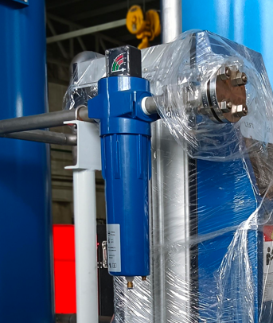
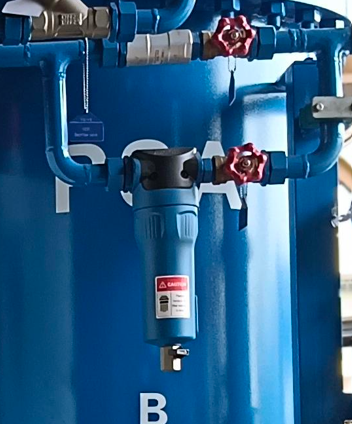
Questions & Answers
15 minutes. Open discussion before the assessment.
Exam + Module Evaluation
Module 107 assessment on today's material, followed by the trainee evaluation form.